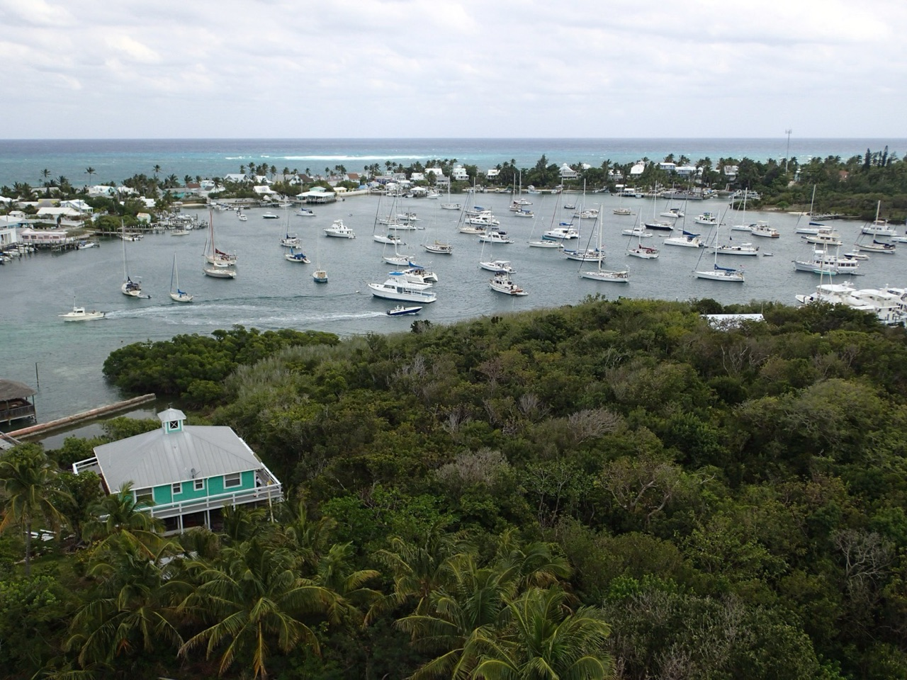
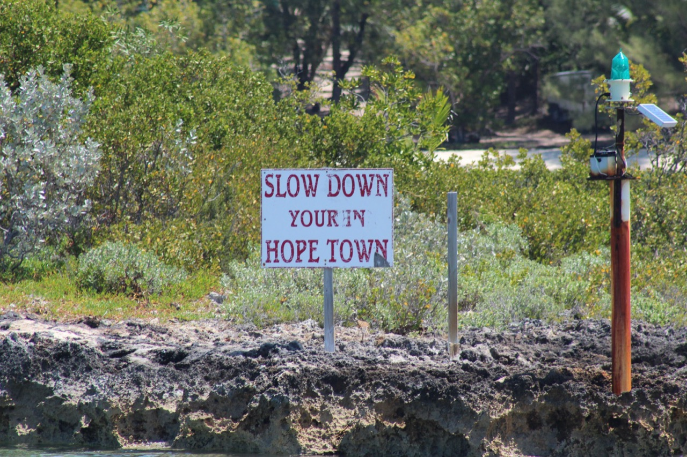
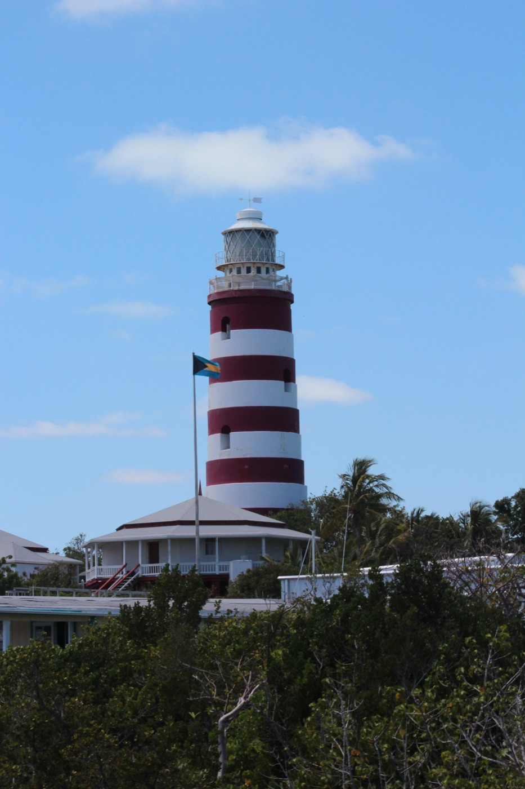
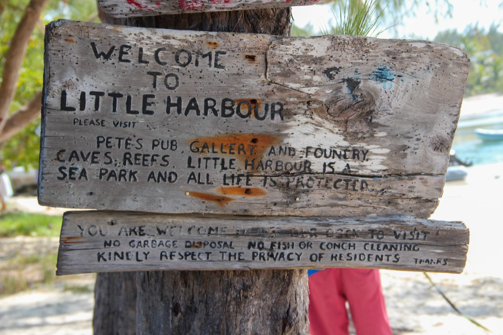
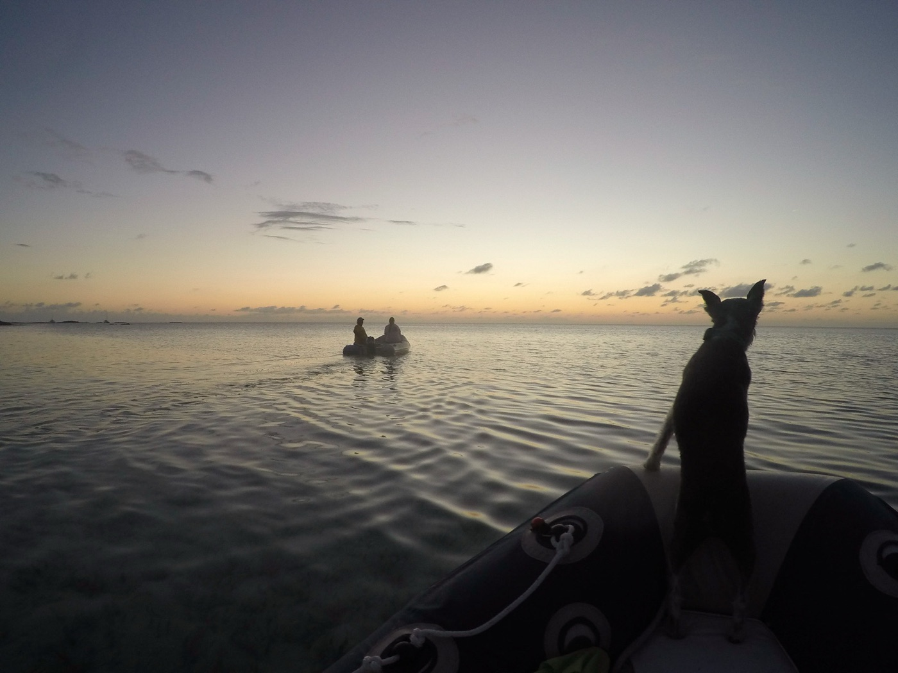
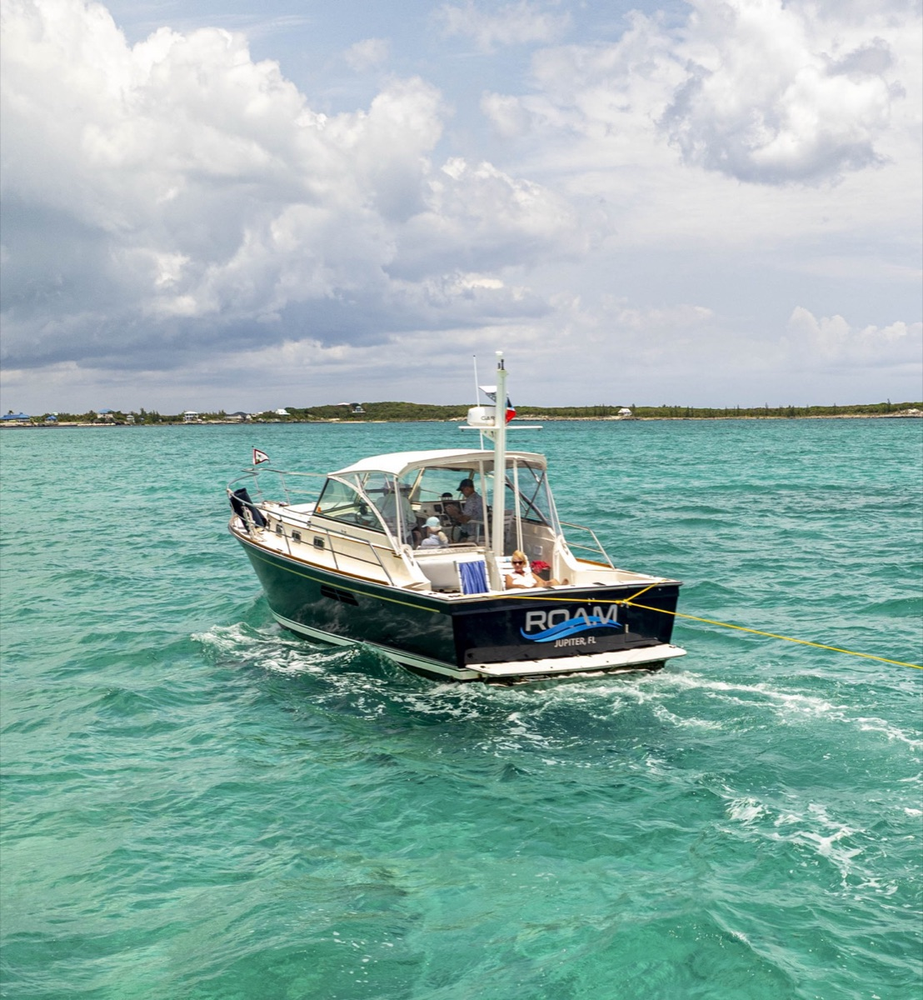

How to Plan Your First Bahamas Cruise
A complete guide to preparing your boat, planning your route,
and making the most of your first adventure to the islands

Planning your first cruise to the Bahamas is exciting and it can feel overwhelming. Between choosing where to go, preparing your boat, managing provisions, and navigating the customs process, there's a lot to think about. But if you break it down into manageable steps and start with the right priorities, you'll be ready to leave the dock with confidence. Here's what I tell clients who are planning their first trip.
- CHOOSE THE PART OF THE BAHAMAS

The Abacos (Best for First-Timers). The Abacos are the easiest introduction to the Bahamas. Marsh Harbour is well-equipped with supplies, fuel, and services. The anchorages are protected and relatively easy to navigate. The islands are close together, so you're never more than a few hours from a secure spot to anchor or a safe marina. If something goes wrong, there's help nearby. Islands like Elbow Cay, Man O' War, and Great Guana are stunning and filled with character. If you like to snorkel, the Pelican Cays Land and Sea Park boast some very healthy coral reefs. Most first-time cruisers spend 2-3 weeks in the Abacos and never want to leave.
The Exumas (More Remote). If you want something more remote, the Exumas offer incredible scenery and fewer crowds. But you'll be farther from resupply opportunities. Georgetown, the main town, is well-stocked, but between ports you're more isolated. You will find The Exuma Cays have world-class snorkeling and pristine anchorages. While it is well worth the effort and the additional planning required, the Exumas may be best left to cruisers with a bit more experience.
Eleuthera and Out Islands (Advanced). Eleuthera and the far out islands are gorgeous but require more planning. Fewer services, longer distances between anchorages, and less predictable conditions. Save these for your second or third cruise when you're comfortable with longer passages.

My Recommendation. Start with the Abacos. Spend your first week in the anchorages close to Marsh Harbour. Elbow Cay (Hope Town), Great Guana, and Man-o-War. Get comfortable with the boat and the rhythm of cruising. On your second or third trip, venture farther south toward the Exumas. This approach builds your confidence and skills progressively.
- PROVISIONING
Plan Your Meals Before You Shop. Don't just fill your boat with random groceries. Plan what you're going to eat. Think about meals that keep well—pasta, rice, canned goods, frozen items. Fresh food is nice for the first few days, but in some parts of the Bahamas, fresh foods may be difficult to find and you can’t count on being able to find some items. Most of your diet will be items that don't require refrigeration or that you've frozen. Make a list organized by category: proteins, vegetables, fruits, staples, snacks, drinks. Stock Before You Leave Florida. Prices in the Bahamas are significantly higher than in Florida. Buy as much as you can before you leave, especially staples, canned goods, and frozen items. Fresh produce, milk, and bread are usually available on most islands, so you can resupply there. But basics like flour, sugar, oil, coffee, and spices are much cheaper in Florida. Don't overload your boat, but do stock smartly.
What to Bring. Bring things that matter to you. If you love good coffee, bring good coffee. If you enjoy specific wine or beer, bring it. BTW, if you are a beer drinker, it is important to know that beer is VERY expensive in the Bahamas, so stock up on your favorite brand(s). They do produce several excellent Rums in the Bahamas that are quite reasonable. If you have dietary preferences or allergies, bring what you need because options in the islands are limited. I also recommend bringing: extra spices and seasonings, olive oil, sauces, baking supplies, and snacks you actually like. These little comforts make a huge difference when you're living on a boat. Also stock: extra water (for emergencies), medications, multivitamins, seasickness remedies, and any over-the-counter items you might need.
Don't Overbuy. Storage space on a boat is limited. Depending on what part of the Bahamas you are in, there will be opportunities (though expensive) to reprovision. Marsh Harbour in the Abacos, Nassau, and Georgetown have excellent grocery stores. You don't need to carry everything for 3 weeks. Figure out how much fresh water and fuel your boat uses per day, calculate how many days until you can resupply, and plan accordingly. Fresh food spoils. Provisions expire. Start with what you need for the first leg, resupply, then decide what to buy for the rest of the cruise based on what you've learned about consumption rates.

- PREPARING YOUR BOAT
Start with a Systems Inspection. Before you go anywhere, you need to know that your boat is ready. This isn't the time to discover engine issues 40 miles offshore. Here's what needs attention: Engine and fuel system. Get a full engine service before you leave. New filters, oil change, coolant check. Run the engine at dock and listen for anything unusual. Check your fuel tank capacity and calculate range. Remember that bad weather burns more fuel than calm conditions. Have extra diesel fuel filters onboard. I've seen too many boats cut a cruise short because of fuel contamination, though it is rare in the Bahamas.
Electrical systems. Your batteries are your lifeline. Test them under load. If they're more than 5 years old, replace them. Check all connections for corrosion. Make sure your alternators are charging properly. You're going to be running navigation equipment, refrigeration, and instruments 24/7. If your electrical system fails, you're in trouble. If you’ve got a generator, make sure it is working properly and efficiently. And bring the supplies you need for an oil change. Depending on how long you’ll be in the Bahamas and how warm the weather is, you may find that you are relying heavily on the generator to cool the boat and charge your batteries.
Through-hull fittings. Every through-hull needs to be inspected and the seacocks need to operate smoothly. If you hit a seacock that won't turn in an emergency, you'll regret it. Put WD-40 on them periodically and work them back and forth. Replace any that are stuck or corroded.
Water and holding tanks. Fill your water tanks and run the system. Check for leaks. Make sure the heads are working properly and pump out your holding tank before you leave. Nothing ruins a cruise like a malfunctioning head. There are very few pump out stations in the Bahamas, so make sure you have a way to empty your holding tank as needed.
Navigation equipment. Your GPS, chartplotter, and autopilot need to work flawlessly. Test them in your home port before you head out. Update your charts. Bring backup navigation tools and it’s a good idea to have a navigation app on your phone and/or ipad. Make sure you have current Bahamas charts for all your devices. Depending on the length of your boat, you may be required to have a working AIS transceiver aboard. I would recommend that REGARDLESS of your boat length you should have an AIS transceiver. You want to see and be seen when you’re at anchor and underway.
Radio and communication. Make sure your VHF radio works and you know how to use it. Consider getting a Starlink satellite system installed. Starlink offers several very affordable plans that can be turned off when you’re back in your home port. Test it before you leave. Cell coverage is pretty good in the Bahamas, but you cannot rely on it completely.
Stock Safety Equipment. This isn't negotiable. You need life jackets for everyone onboard. You need life rafts or life rings that are properly maintained. You need an EPIRB (emergency position indicating radio beacon. You need flares, first aid kits, fire extinguishers, and a well-stocked repair kit. I carry extra hoses, clamps, impellers, a spare water pump, basic electrical supplies, and gasket material. When something breaks at anchor in the Exumas or the out islands, you can't call a repair person. You have to fix it yourself.
Rig Inspection (Sailboats). If you're sailing, have your rig professionally inspected. Check all standing rigging for corrosion or damage. Test your running rigging. Bahamian waters are beautiful, but the wind can build quickly, and you need to trust your rig. Walk the deck and look for anything loose or worn. Check through-bolts, turnbuckles, and spreader brackets. This is not the time to have a rigging failure.
- WEATHER PLANNING

Understand the Season Spring or Fall would be the best time for your first Bahamas cruise. Weather is more predictable, temperatures are comfortable, and wind patterns are favorable. You'll have more good weather windows and fewer surprises. Summer can work, but you're getting into tropical season and it can be HOT with little breeze. Hurricane season runs June through November. If you're cruising during those months, be extremely careful about weather patterns and have an exit strategy.
Check the Extended Forecast. Two weeks before you leave, start watching the forecast. You're looking for a weather window—ideally 5-7 days of settled weather with moderate winds from a favorable direction. For your first crossing from Florida to the Abacos, you want winds from the South to Southeast, not more than 15-20 knots. Don't leave if you have a cold front approaching. Cold fronts in the Bahamas can bring 30-40 knot winds and rough seas. Know
Your Crossing. Your first passage to the Bahamas is typically from West Palm Beach or Fort Lauderdale to Marsh Harbour in the Abacos. It's roughly 50 miles, which could take an hour or a half day depending on your boat and the weather conditions. Leave early in the morning and plan to arrive before dark. If the weather turns bad, you can turn around and come back. Don't make your first passage a long one. Get comfortable with ocean passages closer to home first.
Download Weather Data Before You Leave. Before you leave, download detailed weather forecasts, grib files, and satellite imagery. Even though you will be able to get weather updates via Starlink or cellular service, use the belt and suspenders approach. Use weather routing software to plan your passage. I’m a fan of PredictWind, but there are other options available as well. Understand how to interpret wind data, current predictions, and barometric pressure trends. The more you understand about weather patterns, the better decisions you'll make.
Plan Your Itinerary Around Weather. Don't commit to a rigid itinerary. Say you'll visit Marsh Harbour, then head south to the Exumas, but leave room to change plans based on weather. If a system is building, you might anchor down for an extra day or two. That flexibility is part of the beauty of cruising. You're not on a schedule. You can wait out bad weather and move when conditions improve. Having a tight itinerary is a near guarantee that you’ll experience bad weather (ask me how I know).
Account for Current and Tidal Flow. The Bahamas has significant tidal ranges and strong currents around the banks. Plan your passages to take advantage of tidal flow. You can add 1-2 knots to your speed by timing the current correctly. Get familiar with your chartplotter's current arrows. Know which way the Gulf Stream is running and factor that into your passage timing.
- CLEARING CUSTOMS AND IMMIGRATION
Get Your Documents in Order Before you leave the United States, make sure you have: your vessel documentation or registration, a valid passport (or passport card) for everyone onboard, crew list with names and passport numbers, list of provisions and equipment onboard. If your boat is owned by a corporation, make sure you have the proper documents giving you authority to operate the vessel. The Bahamas takes documentation seriously. Missing paperwork can delay your clearance. The Bahamas has a new CLICK 2 CLEAR program that allows you to go on line and pre-register with customs and pay for all your fees in advance. I highly recommend that you use this service. It will save you a bunch of time and aggravation in the customs office. If you going to the Abacos, you’ll likely clear in at West End, but some people with faster boats will bypass this option and continue on to Green Turtle Cay or several other spots. Wherever you decide to clear in, make that your first stop in the Bahamas the Customs and Immigration office. Don't anchor and explore. Handle customs first. Have your documents out and ready when you go in to the office. Be friendly and professional. Answer their questions honestly. If you use click-to-clear, you’ll be out the door in 5 minutes. If you wait until you arrive to fill out the paperwork, you could be in Customs for an hour or more. They will ask about firearms (leave them at home), drugs (obviously), pets (you must obtain a pet import permit before arriving), and the purpose of your visit. Once cleared, you'll receive a cruising permit that allows you to visit other islands without additional clearance.
Fees. The Bahamas have been in flux for several years. I wrote an article recently about the fee structures as of April 2026. “Bahamas Cruising Permit Changes – April 2026.” The fee structure depends on the length of your vessel, the length of time you want to stay, and other options such as anchoring fees, fishing license, etc.
Pets: You will need to obtain a pet permit(s) before you can clear in with your pet(s). I recommend you use a service to help you through the process. There are several services available, but I recommend Bahamas Pet Import. They offer a flat fee per pet and take all the stress away from getting your pet legally in to the Bahamas.
- FINAL THOUGHTS
Explore Carefully. The Bahamas has incredible snorkeling, diving, and exploring opportunities. But shallow waters mean shallow draft areas where you can easily run aground. Get to know your chartplotter. Use a depth sounder. If you're unsure about water depth, dinghy in first to scout. Coral reefs are fragile—don't anchor on them. Use mooring buoys where available or anchor in designated areas.
Connect with Other Cruisers. Cruisers are incredibly friendly. When you anchor, listen to the VHF for cruising nets where boats exchange information about weather, anchorages, and news from other islands. Attend happy hours on the beach. Talk to other cruisers about their experiences. You'll learn invaluable local knowledge and make friends who share your passion for the water.
Respect the Local Community. The people of the Bahamas depend on tourism and cruisers. Be respectful of their culture and their island. Don't litter. Don't take coral or shells. Don't feed the fish in ways that disrupt the ecosystem. Support local businesses and eat at local restaurants, buy from local shops, hire local guides. Your respect and spending directly benefit the community.
Take Your Time. This is the most important advice I can give. Don't rush. Spend extra days in places you love. Skip places you don't love. Let the rhythm of wind and tide determine your schedule. The Bahamas isn't going anywhere, and you can always come back. The real value of cruising isn't checking islands off a list. It's the time you spend at anchor with people you care about, watching sunsets, swimming in crystal-clear water, and feeling like the daily chaos of normal life can't touch you.

Most importantly, if you see a dark blue hulled Sabre 36 named ROAM in your anchorage, stop by and say hello. The first round in on me! Safe travels.